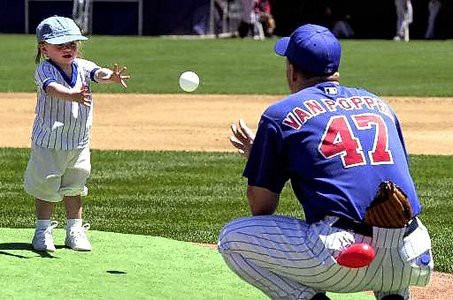
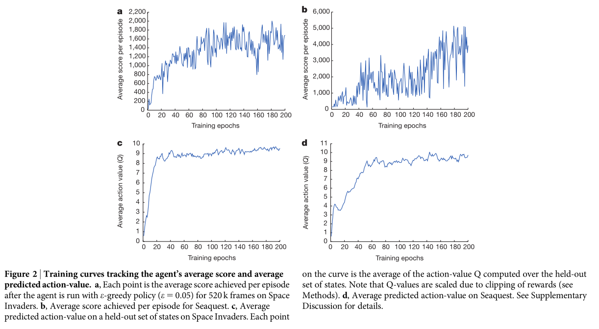
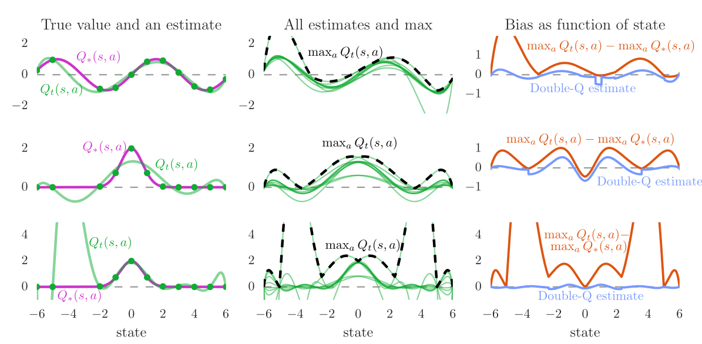
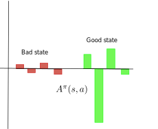

The loss function is estimated by sampling a minibatch of Ki.i.d samples from the training set to compute the loss function and update the parameters \theta.
This is necessary to avoid local minima of the loss function.
Although Q-learning can learn from single transitions, it is not possible using DNN.
Why not using the last K transitions to train the network? We could store them in a transition buffer and train the network on it.
Second naive approach: Q-learning with a transition buffer
Initialize the deep neural network with parameters \theta.
Initialize an empty transition buffer\mathcal{D} of size K: \{(s_k, a_k, r_k, s'_k)\}_{k=1}^K.
for t \in [0, T_\text{total}]:
Select a_{t} using a softmax over the Q-values Q_\theta(s_t, a).
Take a_t, observe r_{t+1} and s_{t+1}.
Store (s_t, a_t, r_{t+1}, s_{t+1}) in the transition buffer.
Every K steps:
Update the parameters \theta using the transition buffer:
NN do not like this. After a while, they give up and settle on a suboptimal policy.
Illustration of non-stationary targets
We want our value estimates to “catch” the true values.
Illustration of non-stationary targets
We update our estimate to come closer to the target.
Illustration of non-stationary targets
But the target moves! We need to update again.
Illustration of non-stationary targets
This leads to very strange and inefficient optimization paths.
1 - Deep Q-networks (DQN)
Problem with non-linear approximators and RL
Non-linear approximators never really worked with RL before 2013 because of:
The correlation between successive inputs or outputs.
The non-stationarity of the problem.
These two problems are very bad for deep networks, which end up overfitting the learned episodes or not learning anything at all.
Deepmind researchers proposed to use two classical ML tricks to overcome these problems:
experience replay memory.
target networks.
Experience replay memory
To avoid correlation between samples, Mnih et al. (2015) proposed to store the (s, a, r, s') transitions in a huge experience replay memory or replay buffer\mathcal{D} (e.g. 1 million transitions).
When the buffer is full, we simply overwrite old transitions.
The Q-learning update is only applied on a random minibatch of those past experiences, not the last transitions.
This ensures the independence of the samples (non-correlated samples).
Experience replay memory
Initialize value network Q_{\theta}.
Initialize experience replay memory \mathcal{D} of maximal size N.
for t \in [0, T_\text{total}]:
Select an action a_t based on Q_\theta(s_t, a), observe s_{t+1} and r_{t+1}.
Store (s_t, a_t, r_{t+1}, s_{t+1}) in the experience replay memory.
Every T_\text{train} steps:
Sample a minibatch \mathcal{D}_s randomly from \mathcal{D}.
For each transition (s_k, a_k, r_k, s'_k) in the minibatch:
Compute the target value t_k = r_k + \gamma \, \max_{a'} Q_{\theta}(s'_k, a')
Update the value network Q_{\theta} on \mathcal{D}_s to minimize:
a_{t+1} \sim \pi_\theta would not be the same between \pi_{\theta_0} (which generated the sample) and \pi_{\theta_t} (the current policy).
The estimated return r_{t+1} + \gamma \, Q^\pi(s_{t+1}, a_{t+1}) would be biased, impairing convergence.
Target network
The second problem when using DNN for RL is that the target is non-stationary, i.e. it changes over time: as the network becomes better, the Q-values have to increase.
In DQN, the target for the update is not computed from the current deep network \theta:
r + \gamma \, \max_{a'} Q_\theta(s', a')
but from a target network\theta´ updated only every few thousands of iterations.
The deep network can be anything. Deep RL is only about defining the loss function adequately.
For pixel-based problems (e.g. video games), convolutional neural networks (without max-pooling) are the weapon of choice.
Why no max-pooling?
The goal of max-pooling is to get rid of the spatial information in the image.
For object recognition, you do not care whether the object is in the center or on the side of the image.
Max-pooling brings spatial invariance.
In video games, you want to keep the spatial information: the optimal action depends on where the ball is relative to the paddle.
Are individual frames good representations of states?
Is the ball moving from the child to the baseball player, or the other way around?

Using video frames as states breaks the Markov property: the speed and direction of the ball is a very relevant information for the task, but not contained in a single frame.
This characterizes a Partially-observable Markov Decision Process (POMDP).
Markov property in video games
The simple solution retained in the original DQN paper is to stack the last four frames to form the state representation.
Having the previous positions of the ball, the network can learn to infer its direction of movement.
DQN training
50M frames (38 days of game experience) per game. Replay buffer of 1M frames.
Action selection: \epsilon-greedy with \epsilon = 0.1 and annealing. Optimizer: RMSprop with a batch size of 32.

DQN to solve multiple Atari games
DQN to solve multiple Atari games
DQN to solve multiple Atari games
The DQN network was trained to solve 49 different Atari 2600 games with the same architecture and hyperparameters.
In most of the games, the network reaches super-human performance.
Some games are still badly performed (e.g. Montezuma’s revenge), as they require long-term planning.
It was the first RL algorithm able to learn different tasks (no free lunch theorem).
The 2015 paper in Nature started the hype for deep RL.
2 - Double DQN
Double DQN
Q-learning methods, including DQN, tend to overestimate Q-values, especially for the non-greedy actions:
Q_\theta(s, a) > Q^\pi(s, a)
This does not matter much in action selection, as we apply \epsilon-greedy or softmax on the Q-values anyway, but it may make learning slower (sample complexity) and less optimal.

Double DQN
To avoid optimistic estimations, the target is computed by both the value network \theta and the target network \theta':
Action selection: The next greedy action a^* is calculated by the value network\theta (current policy):
a^* =\text{argmax}_{a'} Q_{\theta}(s', a')
Action evaluation: Its Q-value for the target is calculated using the target network\theta' (older values):
t = r + \gamma \, Q_{\theta'}(s´, a^*)
This gives the following loss function for double DQN (DDQN):
\epsilon is a small parameter ensuring that transition with no TD error still get sampled from time to time.
\alpha allows to change the behavior from uniform sampling (\alpha=0, as in DQN) to fully prioritized sampling (\alpha=1). \alpha should be annealed from 0 to 1 during training.
Think of it as a “kind of” softmax over the TD errors.
After the samples have been used for learning, their TD error \delta is updated in the PER.
Prioritized Experience Replay
The main drawback is that inserting and sampling can be computationally expensive if we simply sort the transitions based on (|\delta_k| + \epsilon)^\alpha:
The exact Q-values of all actions are not equally important.
In bad states (low V^\pi(s)), you can do whatever you want, you will lose.
In neutral states, you can do whatever you want, nothing happens.
In good states (high V^\pi(s)), you need to select the right action to get rewards, otherwise you lose.
Advantage functions

An important notion is the advantageA^\pi(s, a) of an action:
A^\pi(s, a) = Q^\pi(s, a) - V^\pi(s)
It tells how much return can be expected by taking the action a in the state s, compared to what is usually obtained in s with the current policy.
If a policy \pi is deterministic and always selects a^* in s, we have:
A^\pi(s, a^*) = 0
A^\pi(s, a \neq a^*) < 0
This is particularly true for the optimal policy.
But if we have separate estimates V_\varphi(s) and Q_\theta(s, a), some actions may have a positive advantage.
Advantages have less variance than Q-values.
Dueling networks
In dueling networks, the network is forced to decompose the estimated Q-value Q_\theta(s, a) into a state value V_\alpha(s) and an advantage function A_\beta(s, a):
Q_\theta(s, a) = V_\alpha(s) + A_\beta(s, a)
The parameters \alpha and \beta are just two shared subparts of the NN \theta.
The use of an experience replay memory and of target networks allows to stabilize learning and avoid suboptimal policies.
The main drawback of DQN is sample complexity: it needs huge amounts of experienced transitions to find a correct policy. The sample complexity come from the deep network itself (gradient descent is iterative and slow), but also from the ERM: it contains 1M transitions, most of which are outdated.
Only works for small and discrete action spaces (one output neuron per action).
References
Mnih, V., Kavukcuoglu, K., Silver, D., Graves, A., Antonoglou, I., Wierstra, D., et al. (2013). Playing Atari with Deep Reinforcement Learning. http://arxiv.org/abs/1312.5602.
Mnih, V., Kavukcuoglu, K., Silver, D., Rusu, A. A., Veness, J., Bellemare, M. G., et al. (2015). Human-level control through deep reinforcement learning. Nature 518, 529–533. doi:10.1038/nature14236.
Moore, A. W., and Atkeson, C. G. (1993). Prioritized sweeping: Reinforcement learning with less data and less time. Mach Learn 13, 103–130. doi:10.1007/BF00993104.
Schaul, T., Quan, J., Antonoglou, I., and Silver, D. (2015). Prioritized Experience Replay. http://arxiv.org/abs/1511.05952.
van Hasselt, H., Guez, A., and Silver, D. (2015). Deep Reinforcement Learning with Double Q-learning. http://arxiv.org/abs/1509.06461.
Wang, Z., Schaul, T., Hessel, M., van Hasselt, H., Lanctot, M., and de Freitas, N. (2016). Dueling Network Architectures for Deep Reinforcement Learning. http://arxiv.org/abs/1511.06581.